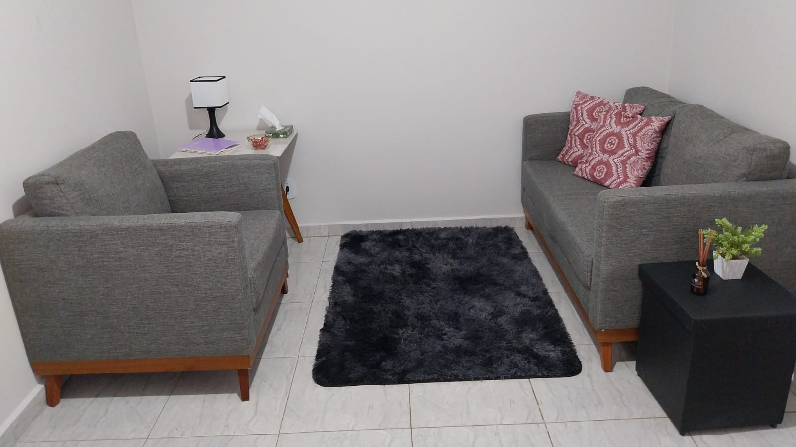
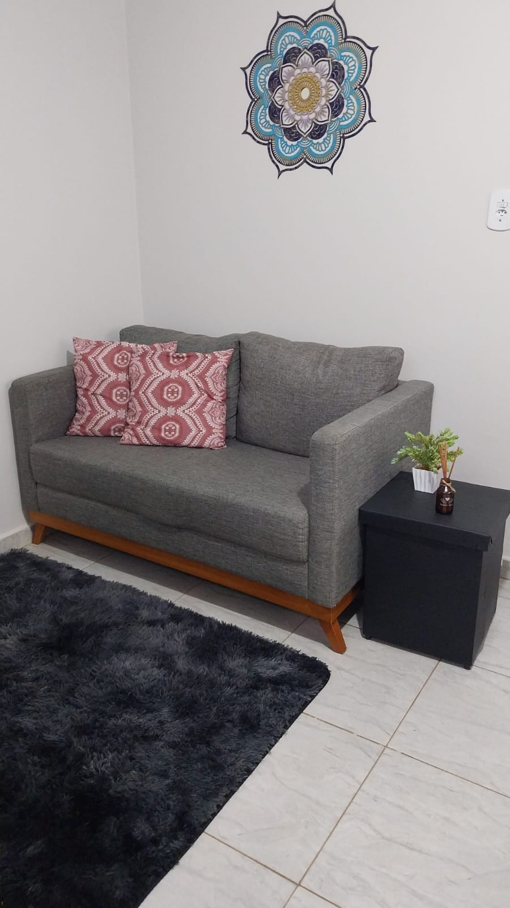
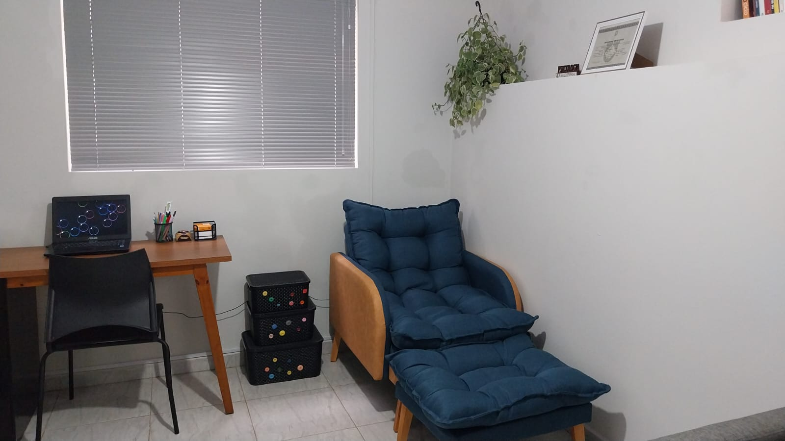

Psicoterapia
Como reconhecer e acolher os primeiros sinais da ansiedade
Entenda os sintomas físicos e emocionais do estresse contínuo e aprenda pequenos exercícios de respiração para momentos de crise.
Psicologia clínica especializada para te ajudar a lidar com a ansiedade, estresse e desafios emocionais de forma leve e acolhedora.
Sou psicóloga clínica com vasta experiência no acompanhamento de adultos e adolescentes. Meu objetivo é proporcionar um ambiente seguro, livre de julgamentos e baseado na ética profissional.
Através de estratégias comprovadas cientificamente, trabalho para te fornecer ferramentas práticas no enfrentamento das dificuldades do dia a dia.
Conheça as principais modalidades de atendimento
Sessões dedicadas ao manejo da ansiedade, depressão, autoestima, relações interpessoais e autoconhecimento.
Foco no fortalecimento emocional, inteligência emocional, autogerenciamento e superação de limitações interpessoais.
Orientação reflexiva e estratégica para transição profissional, planejamento de carreira e alinhamento de propósito.
Conteúdos sobre saúde mental, crescimento pessoal e carreira
Entenda os sintomas físicos e emocionais do estresse contínuo e aprenda pequenos exercícios de respiração para momentos de crise.
Dizer não sem culpa é um ato de autopreservação. Saiba como a comunicação assertiva fortalece seus relacionamentos.
Mudar de área exige planejamento, autoconhecimento e preparo emocional para lidar com as incertezas do mercado.
Um ambiente reservado, confortável e preparado para te receber



É um momento de escuta inicial para entendermos suas necessidades, alinhar expectativas e tirar todas as dúvidas sobre o processo terapêutico.
As sessões duram cerca de 50 minutos e ocorrem semanalmente, adaptando-se conforme o planejamento clínico.